C++、Win32 ネイティブ環境で（x64 でもたぶん同じ方法でできる）国際化（多言語化）する方法を記載します。
実現方法として、 リソースファイルにより 日本語(ja-JP) と 英語(en-US) を切り替える、という方法を 示します。サンプルプログラムはMFCを使いますが、Win32でも同様の方法で実現可能です。
ここで作成するプログラムを以下に示します。
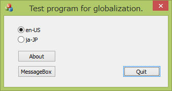
「About」ボタンを押下した場合に表示するダイアログです。
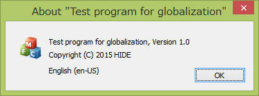
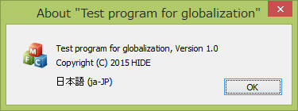
「MessageBox」ボタンを押下した場合に表示するメッセージボックスです。
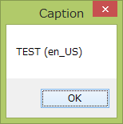
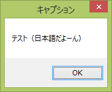
| コンパイラ : | Visual Studio 2013 pro., | |
| OS : | Windows8.1 64bit, | |
まず新規でプロジェクトを作成します。
多言語対応する際に重要なことは、文字セットを”Unicode”とすることです。
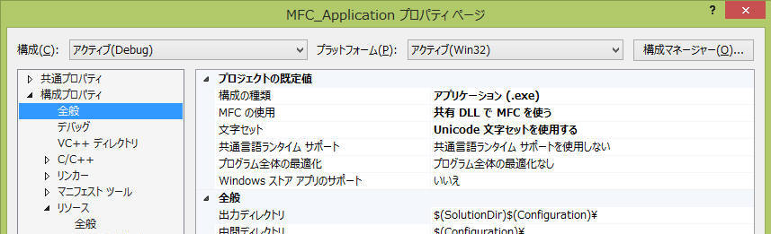
リソースとして、(1)ダイアログ、(2)文字列テーブル、をそれぞれ日本語、英語、に分けて作成します。
作成する際はリソースIDが２つで完全に一致する必要があります。
作成する際は、例えば英語で全て作成したのちにリソースをコピーして日本語版を作成する、などの手順が楽に作業できます。
画面上でマウス右クリック、コピー、貼り付け、してからプロパティで、IDおよびLanguageを修正することでこれらを行います。
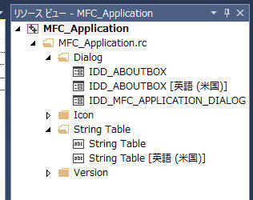
Dialog として以下の２つを用意しました。
(左) 日本語、(右)英語
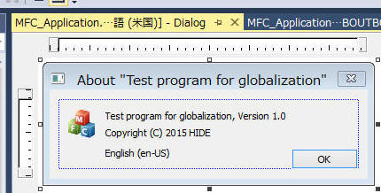 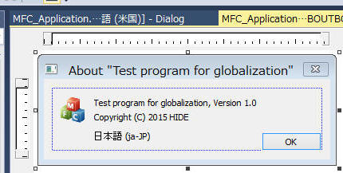
String Table として以下の2つを用意しました。
(左)日本語、(右)英語
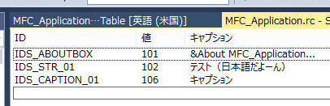 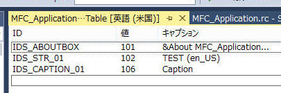
で、最後にプログラム本体。以下の通りでとても簡単です。
ロケールを設定するだけで、後は勝手に適切なリソースを使ってくれます。
if や switch
などによる分岐処理もないので、対象の言語が増えて行った場合も低いリスクで実現ができます。
void CMFC_ApplicationDlg::OnBnClickedRadio1()
{
// ラジオボタンの en-US を選択した場合の処理です
setLang_EnUs();
}
void CMFC_ApplicationDlg::OnBnClickedRadio2()
{
// ラジオボタンの ja-JP を選択した場合の処理です
setLang_Jpn();
}
void CMFC_ApplicationDlg::setLang_Jpn()
{
// ロケールを日本語にする処理です
SetThreadLocale( MAKELCID(MAKELANGID(LANG_JAPANESE, SUBLANG_JAPANESE_JAPAN), SORT_DEFAULT) );
SetThreadUILanguage( MAKELANGID(LANG_JAPANESE, SUBLANG_JAPANESE_JAPAN) );
TRACE0("ja-JP.\n");
}
void CMFC_ApplicationDlg::setLang_EnUs()
{
// ロケールを英語にする処理です
SetThreadLocale( MAKELCID(MAKELANGID(LANG_ENGLISH, SUBLANG_ENGLISH_US), SORT_DEFAULT) );
SetThreadUILanguage( MAKELANGID(LANG_ENGLISH, SUBLANG_ENGLISH_US) );
TRACE0("en-US.\n");
}
void CMFC_ApplicationDlg::OnBnClickedButton1()
{
// 「About」ボタンを押下した場合の処理です
// ロケールの違いをプログラムで意識する必要ありません。勝手に選択されます。
CAboutDlg dlg;
dlg.DoModal();
}
void CMFC_ApplicationDlg::OnBnClickedButton2()
{
// 「MessageBox」ボタンを押下した場合の処理です
CString message;
CString caption;
// リソースから指定IDの文字列を取得します。
// ロケールの違いをプログラムで意識する必要ありません。勝手に選択されます。
message.LoadStringW(IDS_STR_01); // Win32 では ::LoadString を使います。
caption.LoadStringW(IDS_CAPTION_01); //
MessageBox( message, caption);
}
個人的な趣味としては .NET(C#) で作成した時と同様に、自動的に言語ごとのリソース用DLLが生成されること、が期待でしたが、上記のように作成すると exe
内に一本化されるようです。
上記で説明したプログラムを以下からダウンロードできます。
プログラムのメンテや気分により若干内容が異なる場合があるかもしれませんがご容赦ください。
本ページの情報は、特記無い限り下記 MIT ライセンスで提供されます。
| 2023-03-07 | - | ページデザイン更新 |
| 2015-01-15 | - | 新規作成 |